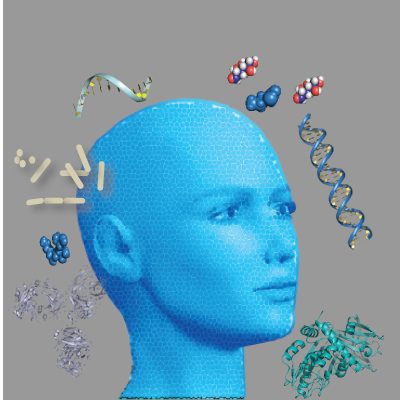
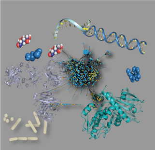
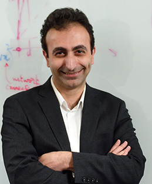
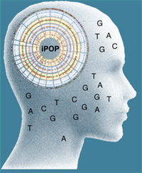
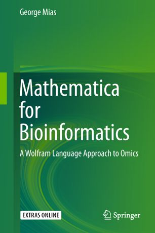

Universal Dynamics
From physical systems to omics and health transitions, we develop frameworks to study changing states across biological and physiological scales.

Biological Dynamics and Multi-Omics
We study biological systems through longitudinal multi-omics integration, dynamic trend identification, and systems-level analysis across molecular and physiological measurements.

Computational and Community Resources
We build computational frameworks and community-facing resources, including MathIOmica/PyIOmica/*IOmica, omics datasets, and tools for dynamic analysis, systems interpretation, and network inference.
Members

Michigan State University
East Lansing, MI 48824
- Division Chief, Systems Biology, Institute for Quantitative Health Science and Engineering (IQ Center)
- Associate Professor with Tenure of Biochemistry and Molecular Biology
- Adjunct Professor of Physics and Astronomy
- Adjunct Professor of Pediatrics and Human Development
EDUCATION
Yale University, New Haven, CT 06520
- Ph.D. in Physics, 2007
- M. Phil. in Physics, 2003
- B.S. & M.S. in Physics, 2001 (Magna Cum Laude with Distinction in Physics)
Stanford University, Palo Alto, CA 94301
- Postdoctoral Research Fellow in Genetics 2009-2014
Professor Mias joined Michigan State University in 2014 and is currently Division Chief of Systems Biology at the Institute for Quantitative Health Science and Engineering (IQ Center), Associate Professor with Tenure in the Department of Biochemistry and Molecular Biology, and Adjunct Professor in Physics and Astronomy and Pediatrics and Human Development.
The G. Mias Lab focuses on dynamics, systems biology, and systems medicine. The lab develops theoretical and computational frameworks for dynamic systems across physical, biological, and physiological applications, with a major emphasis on the longitudinal analysis and integration of omics and physiological data to identify temporal patterns that reflect changing health states.
Current work applies these approaches to development, aging, immune responses, cancer, neurodegenerative disorders, and adaptation to changing conditions such as space travel. The lab also investigates non-invasive saliva diagnostics as a platform for individualized longitudinal monitoring.
Online Profiles

Chenxiang Luo
Chenxiang Luo has been a postdoctoral scholar with the Institute for Quantitative Health Science and Engineering since 2023. She is working on the lab's collaboration with Dr. Bin Gu on characterizing NUT carcinoma.
Erin Vegter
Erin Vegter joined the lab in 2024 and is a graduate student in the Comparative Medicine and Integrative Biology Ph.D. Program, with George I. Mias serving as computational advisor in collaboration with Professor Bin Gu.
Shuyue Xue
Shuyue Xue is a student in the Physics and Astronomy PhD Program. She joined the lab in 2019 and is co-advised by Dr. Mias and Dr. Carlo Piermarocchi.
Shivani Ramakrishnan
Shivani Ramakrishnan joined the lab in 2026 as an undergraduate researcher.
Shraddha Doddaguni Harish
Shraddha Doddaguni Harish joined the lab in 2025 as an undergraduate researcher.
Owen Sylvester
Owen Sylvester joined the lab in 2025 as an Honors College Research Scholar.
Rohan Bansal
Rohan Bansal joined the lab in 2025 as a Professorial Assistant.
Sneha Nandimandalam
Sneha Nandimandalam joined the lab in 2025 as an undergraduate researcher.
Sunidhi Shastri
Sunidhi Shastri has been with the lab since 2022 as an undergraduate researcher.
Brooklyn Collins worked in the lab as a research assistant from 2023 to 2025.
Natalie Currie was a Professorial Assistant and student research assistant in the lab from 2020 to 2024.
Faith Dawson was a Professorial Assistant in the lab from 2021 to 2023.
Raksha Sridharan was a Professorial Assistant in the lab from 2021 to 2022.
Naomi Douglas participated in the lab in 2021 through the Summer Student Research Opportunities Program (SROP).
Megha Pratapwar was a Professorial Assistant in the lab from 2020 to 2021.
Cameron Lochrie was a Professorial Assistant in the lab from 2019 to 2021.
Calista Busch was a Professorial Assistant in the lab in 2019 through Lyman Briggs College.
Michael Bennett was a Professorial Assistant in the lab from 2018 to 2020.
Priyanka Bhoopathi was a Professorial Assistant in the lab from 2018 to 2019.
Kenneth Matthews worked in the lab in 2018 through the Summer Research Opportunities Program (SROP).
Jennifer Abel was a Professorial Assistant in the lab from 2017 to 2020 through Lyman Briggs College.
Madison Verlinde was a Professorial Assistant in the lab from 2017 to 2020 through Lyman Briggs College.
Jayna Lenders was a Professorial Assistant in the lab from 2017 to 2020.
Alisha Ungkuldee was a Professorial Assistant in the lab from 2016 to 2019 through Lyman Briggs College.
Connor Schury was a Professorial Assistant in the lab from 2016 to 2019 while studying Human Biology.
Ashley Garvin worked in the lab from 2016 to 2018 while studying Genomics and Molecular Genetics.
Kailinn Hairston worked in the lab in 2017 through the Summer Research Opportunities Program (SROP).
Keerthana Byreddy was a Professorial Assistant in the lab from 2015 to 2017 while studying Biotechnology.
Curtis Bunger was a Professorial Assistant in the lab from 2014 to 2018 while studying Human Biology.
Hannah Rice was a Professorial Assistant in the lab from 2014 to 2016 while studying Fisheries and Wildlife.
Elizabeth DeYoung worked in the lab from 2015 to 2016 while studying Human Biology and premedicine.
Brian Gutermuth worked in the lab from 2014 to 2016 while studying Biochemistry and Molecular Biology.
Jessica Mizzi worked in the lab from 2014 to 2015 while studying Biochemistry and Molecular Biology.
Eran Veziroglu completed his Biomedical Engineering master's work in the lab from 2018 to 2020 and is currently a medical student at the Geisel School of Medicine at Dartmouth.
Lavida Rogers (neé Brooks) completed her Ph.D. work in the lab from 2014 to 2019 in the Microbiology and Molecular Genetics program and is currently Assistant Professor of Biology at the University of the Virgin Islands.
Raeuf Roushangar completed his dual Ph.D. work in the lab from 2014 to 2018 and is currently a postdoctoral research scientist at Los Alamos National Laboratory.
Minzhang Zheng was a postdoctoral scholar in the lab from 2019 to 2021 and is currently Senior Bioinformatics Research Scientist at St. Jude Children's Research Hospital.
Sergii Domanskyi was a postdoctoral scholar in the lab from 2019 to 2021 and is currently Assistant Computational Scientist at The Jackson Laboratory.
Vikas V. Singh was a postdoctoral scholar in the lab from 2014 to 2017 and is currently Research Scientist II at Eurofins Viracor BioPharma Services.
Tahir Yusufaly was a postdoctoral scholar in the lab from 2014 to 2015 and is currently Assistant Professor of Radiological Physics at Johns Hopkins Medicine.
Cathy Wiesner worked as Lab Manager in the lab from 2014 to 2015.
Resources
MathIOmica/PyIOmica/*IOmica: computational frameworks developed in the lab for integrative and longitudinal omics analysis, including dynamic trend identification, visualization, and systems-level interpretation of multi-omics data.

Mathematica for bioinformatics: A Wolfram Language approach to Omics.
- Text available for free on SpringerLink with institutional access.
- All code from the book is freely available on GitHub (Access Latest Release)
Time-resolved Omics Changes in Saliva
Non-invasive monitoring with saliva: No needles, no pain, no blood
In a proof-of-principle clinical trial, we monitored a generally healthy individual and carried out integrative profiling on saliva before and after vaccination with the pneumococcal PPSV23 vaccine. This is to our knowledge the most extensive saliva-focused omics dataset on an individual, covering 100+ timepoints over one year. The period covers a healthy (baseline) period, as well as comprehensive monitoring of innate and adaptive immune responses following vaccination.
Mias, G.I., Singh, V.V., Rogers, L.R.K. et al. Longitudinal saliva omics responses to immune perturbation: a case study. Sci Rep 11, 710 (2021).
Abstract: "Saliva omics has immense potential for non-invasive diagnostics, including monitoring very young or elderly populations, or individuals in remote locations. In this study, multiple saliva omics from an individual were monitored over three periods (100 timepoints) involving: (1) hourly sampling over 24 h without intervention, (2) hourly sampling over 24 h including immune system activation using the standard 23-valent pneumococcal polysaccharide vaccine, (3) daily sampling for 33 days profiling the post-vaccination response. At each timepoint total saliva transcriptome and proteome, and small RNA from salivary extracellular vesicles were profiled, including mRNA, miRNA, piRNA and bacterial RNA. The two 24-h periods were used in a paired analysis to remove daily variation and reveal vaccination responses. Over 18,000 omics longitudinal series had statistically significant temporal trends compared to a healthy baseline. Various immune response and regulation pathways were activated following vaccination, including interferon and cytokine signaling, and MHC antigen presentation. Immune response timeframes were concordant with innate and adaptive immunity development, and coincided with vaccination and reported fever. Overall, mRNA results appeared more specific and sensitive (timewise) to vaccination compared to other omics. The results suggest saliva omics can be consistently assessed for non-invasive personalized monitoring and immune response diagnostics."
Data and Code are available on Zenodo DOI: 10.5281/zenodo.3987587
Temporal response characterization across individual multiomics profiles of prediabetic and diabetic subjects
Zheng, M., Piermarocchi, C. & Mias, G.I. Temporal response characterization across individual multiomics profiles of prediabetic and diabetic subjects. Sci Rep 12, 12098 (2022).
DOI: 10.1038/s41598-022-16326-9Abstract: "Longitudinal deep multiomics profiling, which combines biomolecular, physiological, environmental and clinical measures data, shows great promise for precision health. However, integrating and understanding the complexity of such data remains a big challenge. Here we utilize an individual-focused bottom-up approach aimed at first assessing single individuals’ multiomics time series, and using the individual-level responses to assess multi-individual grouping based directly on similarity of their longitudinal deep multiomics profiles. We used this individual-focused approach to analyze profiles from a study profiling longitudinal responses in type 2 diabetes mellitus. After generating periodograms for individual subject omics signals, we constructed within-person omics networks and analyzed personal-level immune changes. The results identified both individual-level responses to immune perturbation, and the clusters of individuals that have similar behaviors in immune response and which were associated to measures of their diabetic status."
Data and Code are available on Zenodo DOI: 10.5281/zenodo.6751960
"Personalized medicine is expected to benefit from combining genomic information with regular moni- toring of physiological states by multiple high- throughput methods. Here, we present an integrative personal omics profile (iPOP), an analysis that combines genomic, transcriptomic, proteomic, metabolomic, and autoantibody profiles from a single individual over a 14 month period. Our iPOP analysis revealed various medical risks, including type II diabetes. It also uncovered extensive, dynamic changes in diverse molecular components and biological pathways across healthy and diseased conditions. Extremely high-coverage genomic and transcriptomic data, which provide the basis of our iPOP, discovered extensive heteroallelic changes during healthy and diseased states and an unexpected RNA editing mechanism. This study demonstrates that longitudinal iPOP can be used to interpret healthy and disease states by connecting genomic information with additional dynamic omics activity."
From Personal Omics Profiling Reveals Dynamic Molecular and Medical Phenotypes
Cell, Volume 148, Issue 6, 1293-1307, 16 March 2012
The raw data for the pilot iPOP study has been made publically available as follows:
iPOP DATA SITE
snyderome contains local repository of iPOP data
MASS SPECTROMETRY DATA
PEPTIDE ATLAS
https://www.peptideatlas.org/PASS/PASS00062
Open Source Tools for Computation
Tools available on the gmiaslab GitHub repository.
- MathIOmica and PyIOmica
- MathIOmica.org Information Homepage for MathIOmica and PyIOmica
- MathIOmica GitHub Page Multi-omics analysis tool written in the Wolfram Language
- PyIOmica GitHub Page Multi-omics analysis tool written in Python
- MathIOmica-MSViewer
- MathIOmica-MSViewer GitHub Page A mass spectrometry spectra viewer written in the Wolfram Language.
- ClassificaIO
- ClassificaIO GitHub Page A GUI for Machine Learning Algorithms (Python).
- George I. Miasc , Mathematica for Bioinformatics: a Wolfram Language approach to Omics, Springer, ISBN 978-3-319-72377-8 doi:10.1007/978-3-319-72377-8
- George I. Mias, M. Snyder, Personal Genomes, Quantitative Dynamic Omics and Personalized Medicine, Quantitative Biology 1(1) (2013),
doi:10.1007/s40484-013-0005-3 Offers examples of computational tools as an introduction to integrative dynamic omics.
- Anaconda has a great Python distribution.
- Python
- Stack Overflow has answers to a lot of programming questions.
- The Feynman Lectures on Physics has Richard Feynman's fantastic pedagogical lecture notes on Physics.
About Us
Our research interests lie in dynamics, systems biology, and systems medicine. We are an interdisciplinary team that develops theory and computational frameworks for studying dynamic systems, with applications spanning molecular, physiological, and clinical data. We focus on longitudinal monitoring and integrative analysis of omics and physiological measurements to identify temporal patterns that reflect changing biological states.
Our long-term vision is to develop innovative dynamics methods, advance individualized longitudinal medicine, and improve monitoring in both clinical and operational settings. This includes applications in aging, immune response, cancer, neurodegenerative disease, and adaptation to changing environments such as space travel, as well as the development of non-invasive saliva diagnostics for personalized monitoring.
Latest News
LinkedIn: professional updates and announcements.
ORCiD: publications and research record updates.
Twitter / X feed
Tweets by gmiaslabContact Us
G. Mias Lab
Address: 775 Woodlot Drive, Rm 1319, Institute for Quantitative Health Sciences and Engineering,
East Lansing, MI, 48824
Email: gmiaslab@gmail.com